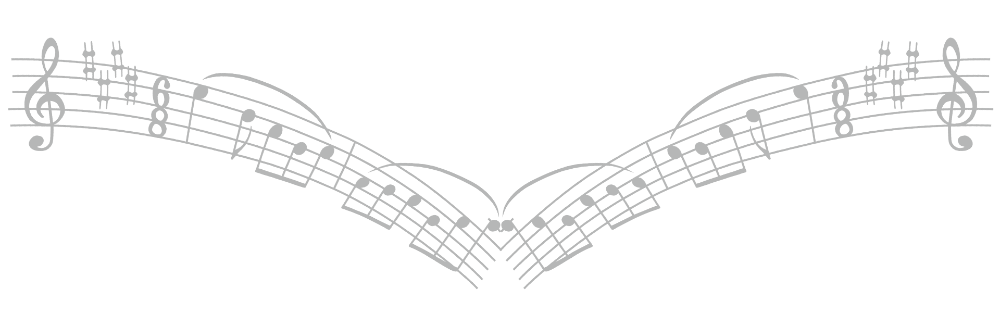

Cristiano Ludwig
Bio
Cristiano começou a tocar saxofone aos 13 anos. Possui bacharelado em música (saxofone) pela Universidade Federal do Rio Grande do Sul (UFRGS) e Mestrado em jazz performance pela NJCU (New Jersey City University), em Jersey City, EUA, onde estudou com os renomados saxofonistas, Bob Malach e Walt Weiskopf. Durante esse período, apresentou-se ao lado de artistas importantes na cena de jazz de Nova York como Alan Ferber, Catherine Russell, Alex Norris e Chris Byars e também em diversos bares, casas de jazz e rádios da região metropolitana e cidade de Nova York, como WBGO, Club Bonafide (que pertence ao baixista Richard Bona), Zinc Bar, entre outros. Em 2016 foi premiado pela New Jersey Jazz Society com a Don Robertson Scholarship, em reconhecimento ao excelente desempenho no estudo do jazz.
De volta ao Brasil, apresenta-se regularmente nas casas de jazz de Porto Alegre com seu trabalho autoral ou acompanhando artistas da cena instrumental da cidade. Também se apresenta com as principais orquestras do estado como OSPA (Orquestra Sinfônica de Porto Alegre), Orquestra Municipal de Sopros de Caxias do Sul, Orquestra de Sopros de Novo Hamburgo, Salvagni Big Band & Ney Lisboa e Orquestra Sinfônica de Gramado. Esteve em sua primeira turnê pela Europa em janeiro de 2020 e lançou seu primeiro álbum como band leader intitulado Cristiano Ludwig Quarteto – Olhar para o Amanha – em 2021.
Music

Cristiano Ludwig Quarteto nasceu inspirado na paixão pelo jazz e na profunda experiência que Cristiano obteve em Nova Iorque ao vivenciar de perto toda a força e as nuances que esse estilo é capaz de proporcionar. Além de Cristiano no sax tenor, o grupo conta com Antônio Flores na guitarra, Daniel Vargas na bateria e Miguel Tejera nos contrabaixos, todos experientes e renomados músicos da cena instrumental de Porto Alegre. O Quarteto tem o objetivo de proporcionar ao público a experiência de poder desfrutar de música com o autêntico sotaque do Jazz norte americano com um leve toque de Brasil. Pensando nisso, traz um repertório autoral variado, com ritmos brasileiros mesclados a um fraseado jazzístico e composições inspiradas nos grandes nomes do jazz como Sonny Rollins, John Coltrane, Joe Henderson, McCoy Tyner e outros.
O grupo gravou seu primeiro álbum em 2021 durante uma das fases críticas da pandemia, e o título, Olhar para o Amanhã, refere-se à esperança por dias melhores que alimentou a criação do trabalho.
O disco também conta com as participações especiais de Walt Weiskopf, renomado saxofonista e educador norte americano e também um dos mentores de Cristiano. Marcelo Martins, uma das maiores referencias e influencias do saxofone brasileiro, e também do percussionista Bruno Coelho, talentoso e renomado musico da cena instrumental do RS.
